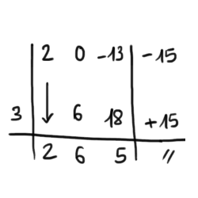
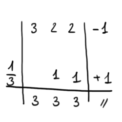
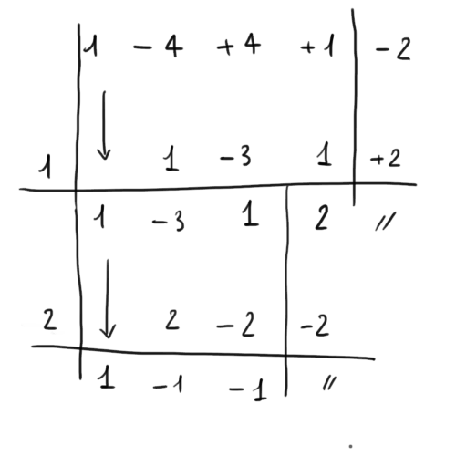

Svolgeteli come se fosse il compito in classe: 2 ore di tempo, no telefono, no distrazioni, no appunti.
Usate i suggerimenti e controllate i riusltati solo dopo aver terminato il compito.
Quando avete finito, compilate il questionario di autovalutazione che trovate in fondo alla pagina.
-
Raccoglimento a fattore comune
\(40b^3x^4y^7-60a^4x^7y^3+24a^2xy^4\)
\(4xy^{3}\left(10b^{3}x^{3}y^{4}-15a^{4}x^{6}+6a^{2}y\right)\)
-
Raccoglimento a fattore parziale
\(2bxy-10x+15-3by\)
\(by\left(2x-3\right)-5\left(2x-3\right)=\left(by-5\right)\left(2x-3\right)\)
-
Scomposizione tramite somma per differenza
\(81a^2b^{10}-100\)
\(\left(9ab^{5}\right)^{2}-10^{2}=\left(9ab^{5}-10\right)\left(9ab^{5}+10\right)\)
-
Scomposizione tramite somma/differenza di cubi
\(27x^3y^6-1\)
\(\left(3xy^{2}\right)^{3}-1^{3}=\left(3xy^{2}-1\right)\left(9x^{2}y^{4}+1+3xy^{2}\right)\)
-
Trinomio speciale
\(z^2-12x+20\)
\(\left(z-10\right)\left(z-2\right)\)
-
Quadrato di binomio
\(x^4+9y^8+6x^2y^4\)
\(\left(x^2+3y^4\right)^2\)
-
Scomposizione tramite Ruffini
- \(2x^{3}-13x-15\)
- \(3x^{3}+2x^{2}+2x-1\)
\(\left(x-3\right)\left(2x^2+6x+5\right)\)
\(\left(x-\frac{1}{3}\right)\left(3x^2+3x+3\right)\)
 -
Struttura di raccoglimento a fattore comune
\(x^{2}y^{6}\left(x^{2}-1\right)+9\left(x^{2}-1\right)-6xy^{3}\left(x^{2}-1\right)\)
\(\color{white}{=}\color{black}{\left(x^{2}-1\right)\left(x^{2}y^{6}+9-6xy^{3}\right)=}\)
\(=\underbrace{\left(x^{2}-1\right)}\underbrace{\left(x^{2}y^{6}+9-6xy^{3}\right)=}\)
\(=\underbrace{\left(x+1\right)\left(x-1\right)}\underbrace{\left(xy^{3}-3\right)^{2}}\) -
Struttura di differenza di quadrati
\(\left(x^{2}-3\right)^{2}-\left(x^{2}-1\right)^{2}\)
\(\color{white}{=}\color{black}{\left[\left(x^{2}-3\right)-\left(x^{2}-1\right)\right]\left[\left(x^{2}-3\right)+\left(x^{2}-1\right)\right]=}\)
\(=\left[x^{2}-3-x^{2}+1\right]\left[x^{2}-3+x^{2}-1\right]=\)
\(=\left(-2\right)\left(2x^{2}-4\right)=\)
\(=-2\cdot2\left(x^{2}-2\right)=\)
\(=-4\left(x^{2}-2\right)\)
-
Struttura di trinomio speciale
\(a^{12}-38a^6+37\)
\(\color{white}{=}\color{black}{\left(a^{6}\right)^{2}-38a^{6}+37=\text{ sostituiamo } a^{6} \text{ con } B}\)
\(=B^{2}-38B+37=\)
\(=\left(B-37\right)\left(B-1\right)=\text{risostituiamo }\)
\(=\left(a^{2}-37\right)\left(a^{2}-1\right)=\)
\(=\left(a^{2}-37\right)\underbrace{\left(a^{2}-1\right)}=\)
\(=\left(a^{2}-37\right)\underbrace{\left(a+1\right)\left(a-1\right)}\)
-
Scomposizione di polinomi qualsiasi
-
\(x^{4}-13x^{2}+36\)
Il polinomio ha la struttura di un trinomio speciale.
Una volta scomposto guarda le due parentesi. Si possono scomporre?\(\color{white}{=}\color{black}{\left(x^{2}\right)^{2}-13x^{2}+36=\text{ sostituiamo }x^{2}\text{ con }A}\)
\(=A^{2}-13A+36=\)
\(=\left(A-9\right)\left(A-4\right)=\text{ risostituiamo }\)
\(=\left(x^{2}-9\right)\left(x^{2}-4\right)=\)
\(=\left(x+3\right)\left(x-3\right)\left(x+2\right)\left(x-2\right)\)
-
\(x^4-4x^3+4x^2+x-2\)
Applicate Ruffini due volte.
\(\left(x-1\right)\left(x-2\right)\left(x^2-x-1\right)\)
 -
\(x^2\left(x-1\right)^3-9\left(x-1\right)\)
Prima raccogliete a fattor comune \(x-1\).
Poi osservate che il polinomio in parentesi ha la struttura di una differenza di quadrati\(\left(x-1\right)\left[\left(x^{2}\left(x-1\right)^{2}-9\right)\right]=\)
\(=\left(x-1\right)\left[x\left(x-1\right)+3\right]\left[x\left(x-1\right)-3\right]=\)
\(=\left(x-1\right)\left(x^{2}-x+3\right)\left(x^{2}-x-3\right)\)
-
\(x^2-y^4+\left(x-y^2\right)^2\)
Scomponete il polinomio rosso
\(\color{red}{x^2-y^4}\color{black}{+\left(x-y^2\right)^2}\)
Successivamente mettete in evidenza il fattore comune\(\color{white}{=}\color{black}{\left(x+y^{2}\right)\left(x-y^{2}\right)+\left(x-y^{2}\right)^{2}=}\)
\(=\left(x-y^{2}\right)\left[\left(x+y^{2}\right)+\left(x-y^{2}\right)\right]=\)
\(=\left(x-y^{2}\right)\left(2x+y^{2}\right)\)
-
\(a^5-a-2+2a^4\)
Ordinate il polinomio in modo che il grado sia decrescente.
Raccoglimento a fattor comune. Scomposizione tramite somma per differenza due volte.\(\color{white}{=}\color{black}{a^{5}+2a^{4}-a-2=}\)
\(=a^{4}\left(a+2\right)-\left(a+2\right)=\)
\(=\left(a^{4}-1\right)\left(a+2\right)=\)
\(=\left(a^{2}-1\right)\left(a^{2}+1\right)\left(a+2\right)=\)
\(=\left(a+1\right)\left(a-1\right)\left(a^{2}+1\right)\left(a+2\right)\)
-